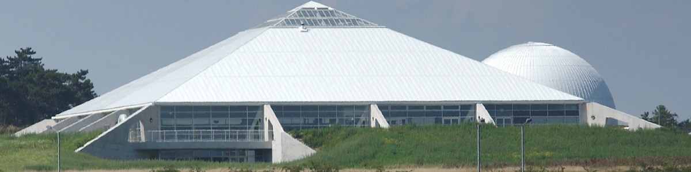

Winchester Discovery Science Centre

The Winchester Science Discovery Centre & Planitarium is an interactive and fun learning centre in which children can learn physics. Ian, one of my lecturers aproached Aarul (one of my peers) and I with an oppertunity to work with a Winchester design company called First Option Software.
After meeting with David Cradduck (Business Development Manager at First Option Software) We learnt that we were going to be working on a project called "Your Mapp".

Your Mapp is an application that allows companies such as museums to have custom interactive maps with waypoints/points of interest. This allows the visitor/users to navigate through the site and obtain more information on certain exhibits.